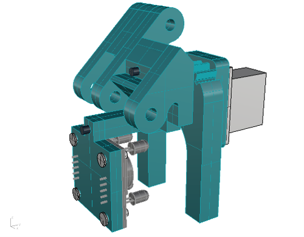

ENGINEERING PROJECTS
Work that required real analysis and real hardware.
BLADE DESIGN, MANUFACTURING & TESTING LEAD / 8-MEMBER TEAM
Collegiate Wind Competition 2026 — Wind Turbine Blade Design
Led all blade work for UNCC's 2026 DOE Collegiate Wind Competition entry which consisted of airfoil selection, geometry optimization, manufacturing, and field testing. The goal was maximum power output from 5 to 10 m/s within a 0.45 m rotor diameter limit and survive up to 13 m/s. The turbine was scored across five tasks: power curve, rated power, emergency stop, load disconnect stop, and durability.
The rotor diameter limit placed blade Reynolds numbers between 40,000 and 140,000. I evaluated 12 airfoils through simulation; S822, S823, SD7003, SD7062, SG6042, SG6043, MH112, NACA2414, S122, BW-3, Davis 3-R, and A18; and fabricated physical blades with S822, SD7003, Davis 3-R, and A18 for vehicle testing. Thin profiles could not cut in reliably below 7 m/s. The S822 produced a higher lift-to-drag ratio across a wider angle-of-attack range, which gave it better startup behavior and more consistent output at the low wind speeds that carry the most weight in scoring.
Blade geometry was optimized using Blade Element Momentum theory with the Schmitz method in QBlade 2.0.9. A design tip speed ratio of 3.3 came out of iterative simulation. Lower values had better performance at low windspeeds and poorer performance at higher windspeeds while higher values did the opposite. A variable internal structure was designed with a 2.8 mm shell and 15% infill near the root to resist bending, and a hollow with 1.2 mm shell toward the tip to minimize roational inertia. Structural bending tests confirmed a safety factor of 2.47 against the maximum expected aerodynamic thrust of 11 N.
With no wind tunnel at UNCC, I designed a vehicle-based test method. The turbine was mounted on a car roof with a wooden platform that fit underneath the roof racks and secured with ratchet straps. A pitot tube on the tower and handheld anemometer outside the car was used for independent wind speed verification with multiple passes at each target speed averaged to reduce turbulence effects. The S822 blade outperformed all other candidates at every test point except for 10 m/s.
| 5 m/s | 690 RPM 4.9 W |
| 6 m/s | 916 RPM 7.6 W |
| 7 m/s | 1,059 RPM 11.6 W |
| 8 m/s | 1,181 RPM 14.8 W |
| 9 m/s | 1,240 RPM 18.1 W |
| 10 m/s (peak) | 1,441 RPM 26.1 W |
| Measured TSR range | 2.9 to 3.5 (design: 3.3) |
| Cp range | 0.22 to 0.43 |
| Blade safety factor | 2.47 (failure at 27.2 N, 9 deg deflection) |

GRIPPER DESIGN, FABRICATION & INTEGRATION / 7-MEMBER TEAM
Robot Design Lab — 3-DOF Pick-and-Place System
Designed, fabricated, and integrated the gripper for a 3-DOF robotic arm built to sort and stack wooden cubes by color. My scope covered all design generations, force and torque analysis, CAD models, dimensioned drawings, fabrication, and integration with the third robot arm link (Rotational Axis 3).
Force and torque analysis drove every design decision. Required gripping force: 0.507 N accounting for block mass, arm acceleration, and PLA-to-wood friction. Required servo torque: 0.21 kg-cm. The MG90s micro servo at 1.8 kg-cm rated torque gave a safety factor of 8.57. Formal engineering drawings were produced for all five fabricated parts to UNCC drawing standards.
GEN 1
Rack-and-pinion tong drive. Force and torque calculations confirmed feasibility. Mechanism was more complex than the task required. complexity reduced in next iteration.
GEN 2
Direct servo-to-tong drive. Geared tongs actuate symmetrically. TCS3200 color sensor mounted behind tongs. Simpler and faster to assemble.
GEN 3 (FINAL)
Material redistributed for mass efficiency. Sensor clearance opened up to fix interference found in testing. Rocker arm stabilization. Connected to RA3 via 5 mm steel shafts on ball bearings.
| Total mass (all hardware) | 117 g |
| Required gripping force | 0.507 N |
| Required motor torque | 0.21 kg-cm |
| Motor selected | MG90s, 1.8 kg-cm rated |
| Torque safety factor | 8.57 |
| Fabricated parts | 5 x FDM PLA+, 20% infill |
| Result | 9 cubes sorted and stacked in 1:40 |
